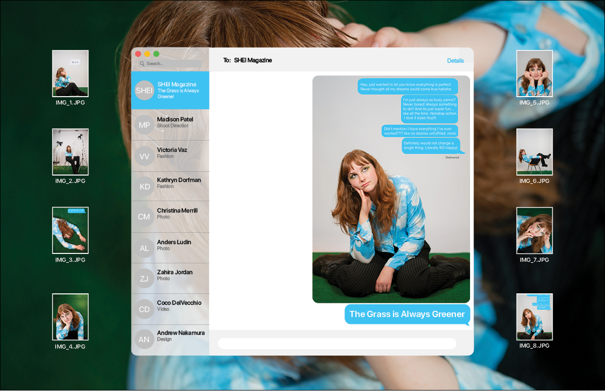
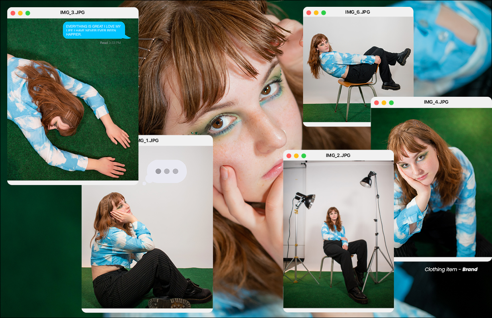
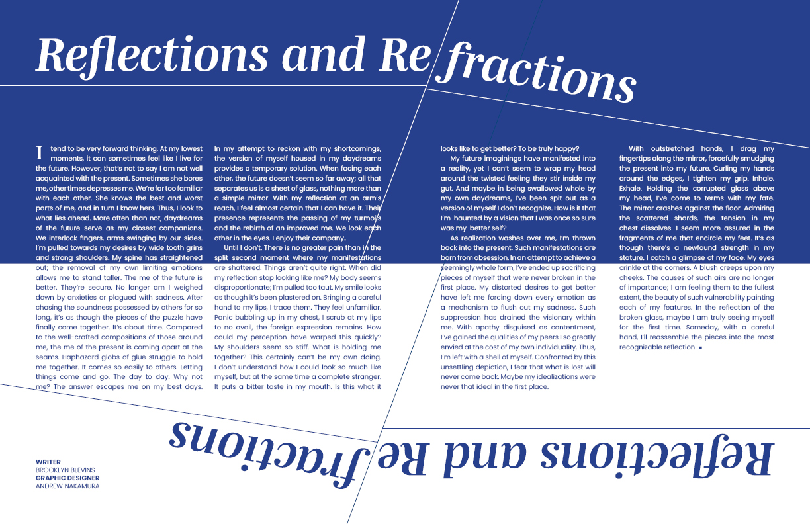
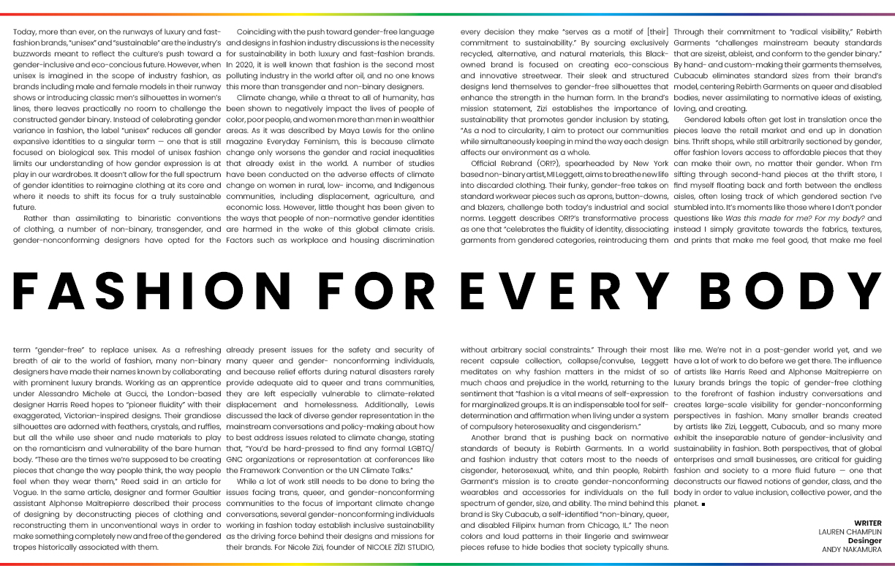
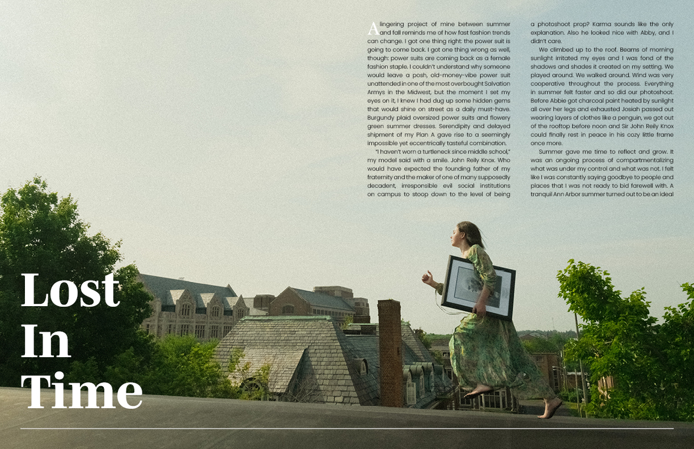
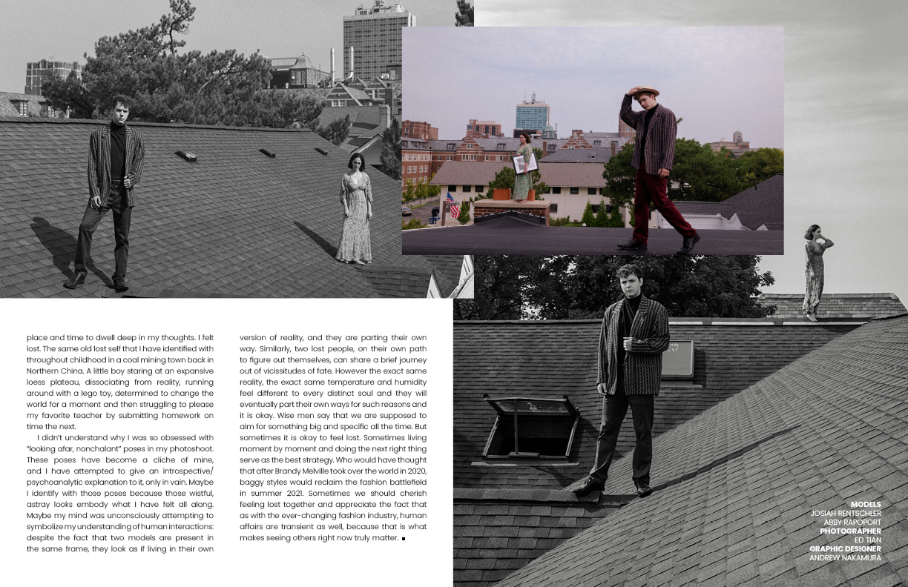
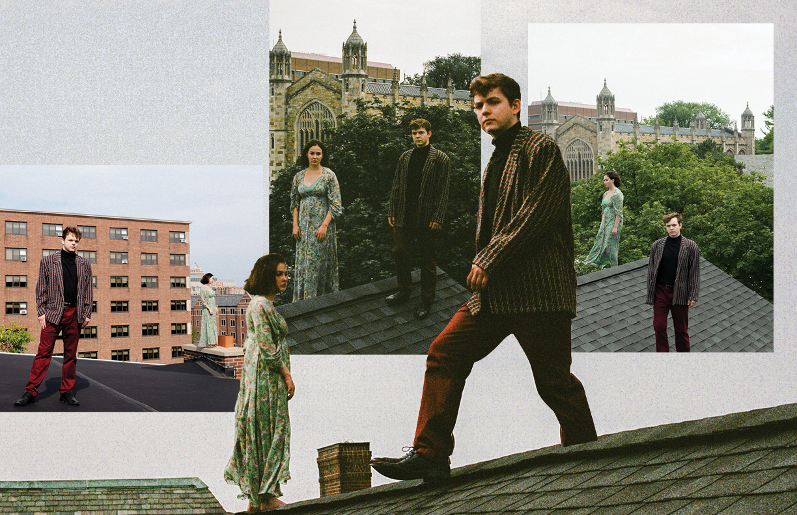

This layout was for the photoshoot "Addiction," and I immediately fell in love with the colors and the mixing of different textures of the backgrounds when I saw the photos. I decided to play up the psychadelic nature of the photos by creating text in illustrator and creating motions blurs in photoshop. I also sourced colors from the images to create semi-transparent borders overlaying the photos.
 This is my favorite layout that I've done because I had a really strong vision for the design from the outset. Several images I received from the photograph contained photoshopped iMessages overlayed on the photos, so I decided to design the pages around a desktop homepage. I even included small details like including the staff credits inside of the iMessage client.
 Both of these layouts were for written works, which I can often find challenging because the page must be interesting enough to capture the reader's attention while still ensuring that the text is readable. I achieve this balance by styling the title to grab the reader's attention and filling white space with different design elements and colors. It is also easy to find inspiration in the written text of the story, so that typically guides my design process.
  This spread is the longest one I've designed because it contained both a story and photos. Because of the title "Lost in Time," I wanted to create a collage to channel that feelings of being lost. I wanted the photos to cut into one another so that the viewer can see the collision of these worlds that the photgrapher has created.